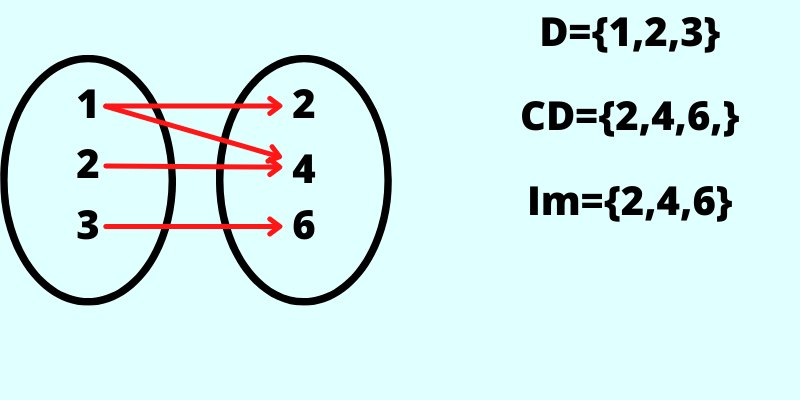

Uma função é uma relação entre duas Variáveis.
Imagine que 1 litro de gasolina valha R$5,00 ,logo se tivermos 2 litros o preço da gasolina irá dobrar,e assim por diante.
Então existe uma relação entre litros e o preço,pode se variar a quantidade de litros e o preço.
o preço que se paga depende da quantidade de litros,então o preço está em função da quantidade de litros.
Podemos escrever uma função que associa o preço com os litros.
Vamos chamar os litros de X e o preço de P,entaõ podemos fazer uma relação entre elas.
Então irá ficar:
Exemplo:
Se eu quiser 8 litros,coloco:
P=5,00.8
E assim você terá seu resultado.
Conceito:Dados dois conjuntos A e B, e uma relação entre eles,dizemos que essa relação é uma função de A em B se e somente se,para todo X∈A existe um único Y∈B de modo que X se relacione com y.
Exemplo:
Vamos associar cada elemento de A ao seu dobro em B.
A imagem de cima é função,agora vamos ver um caso que não é função.
Exemplo:Seja f: A➝B e f(X)=3X, temos:
Basta um número não dar certo que não é função.
Todos os números tem que estarem conectados,essa regra só vale para o grupo A.
Como determinamos se uma gráfico é uma função ou não?
Para identificar se um gráfico é uma função ou não precisamos passar retas verticais pararelas ao eixo y,não importa a posição que faça.
Se bate só uma vez na linha vermelha é função,se bater mais de uma vez não é função.
Domínio=Todos os elementos presentes em A.
Contradomínio=Todos os elementos de B.
Imagem=Todos os elementos de B associados aos elemtentos de A
Exemplo:Domínio são os valores que o eixo do X tem.
Imagem são os valores de Y no gráfico.
Domínio de uma função são os valores que podem ser colocados no X.
Restrições:Antes de começarmos as contas temos que olhar se tem alguma restrição.Aqui vão alguns Exemplos:
Como o X está no denominador temos que fazer uma conta para descobrir qual a restrição.
Contradomínio=Imagem
Se X≠Y ,então f(x)≠f(y)
Resumindo os elementos de A estão ligados obrigatóriamente em elementos diferentes.
É uma função que é Sobrejetora e Injetora ao mesmo tempo.
Para fazermos uma função inversa temos que trocar o X e o Y de lugar.
Depois passamos o Y para a esquerda e o X para a direita.
Sendo F e G funções de domínio real com f(x)=x2+2x e g(x)=1-3x ,determine:
a)f(g(x)) ou fog(x)
fog=x2+2x
transforme todos os X em G.
fog=(1-3x)2+2.(1-3x)b
Agora é só resolver normalmente.
Sendo F e G funções de domínio real com f(x)=x+9x e g(x)=20-3x ,determine: f(g(3))
Dado a função f(x)=5x-3 ,quais sequências de pares ordenados estão corretas: